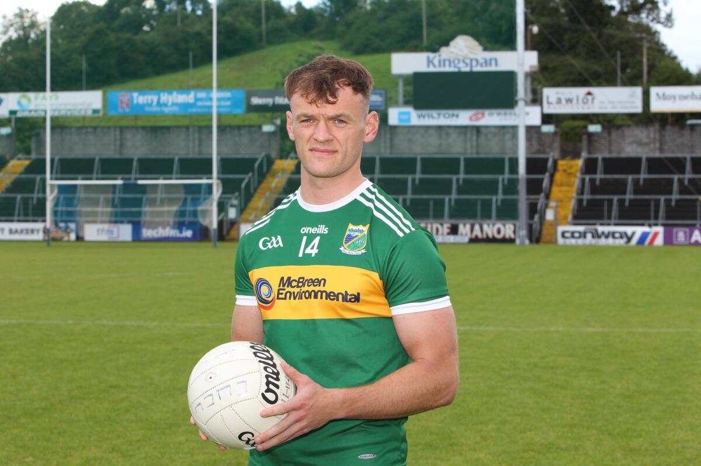
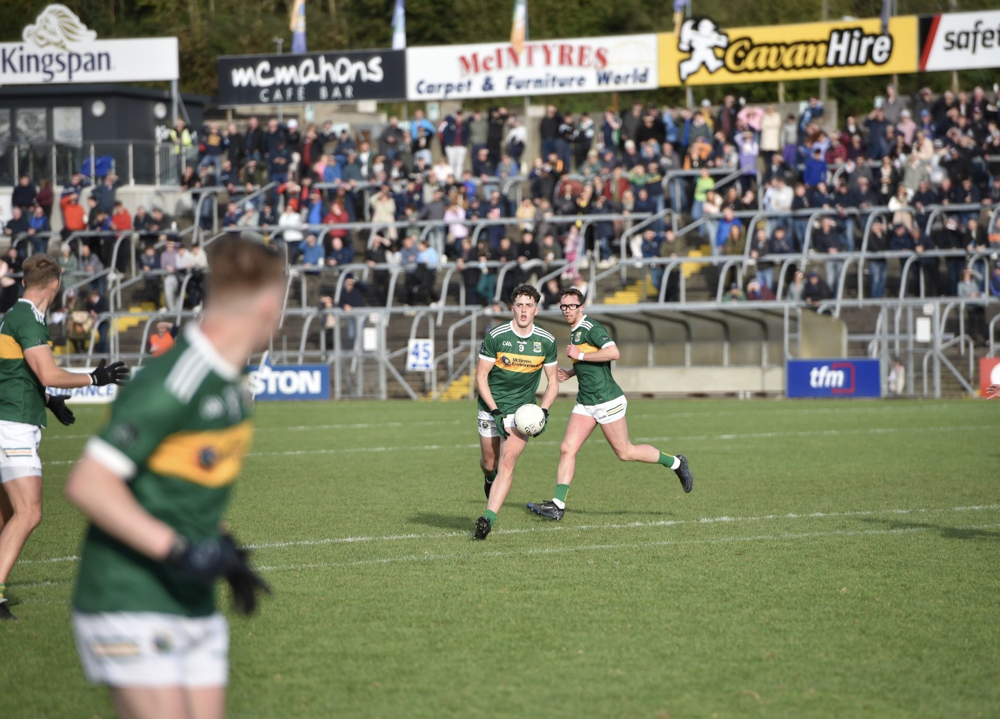
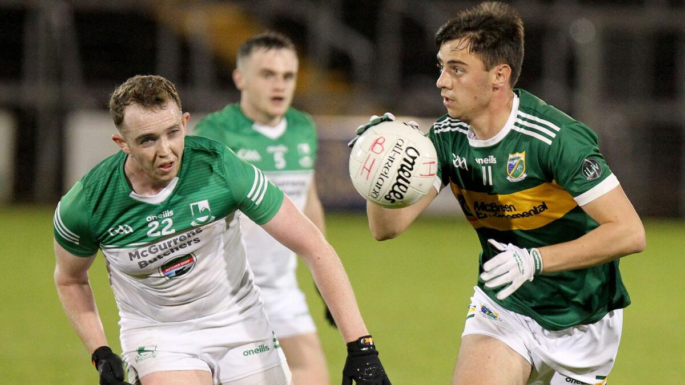
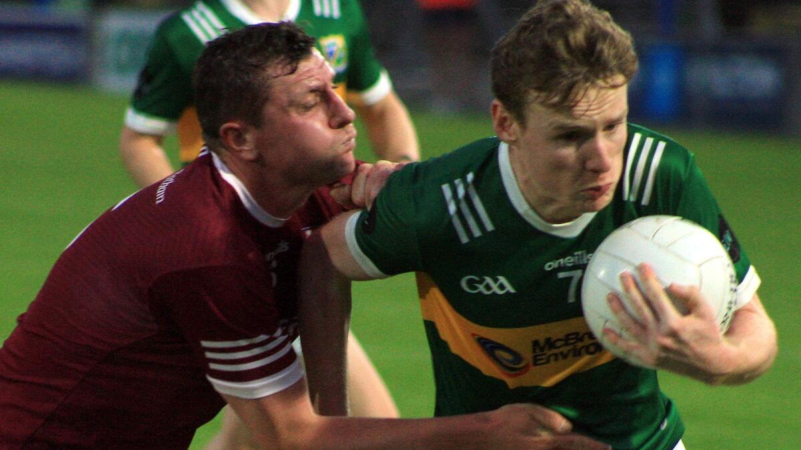
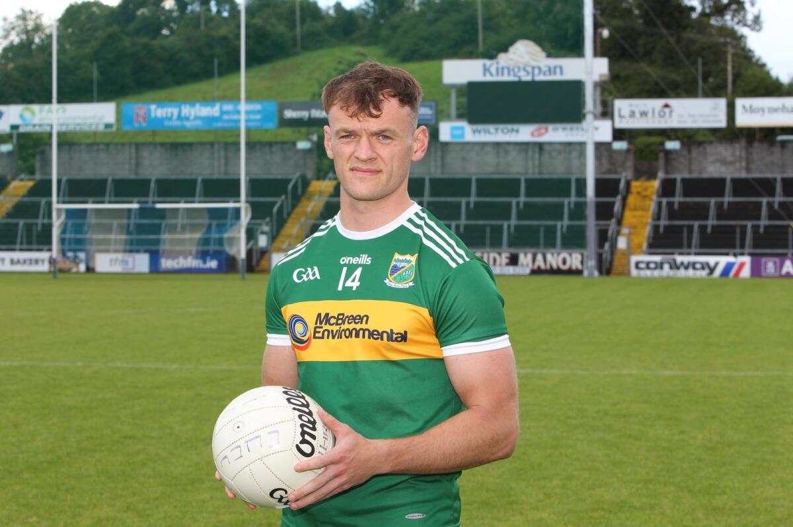
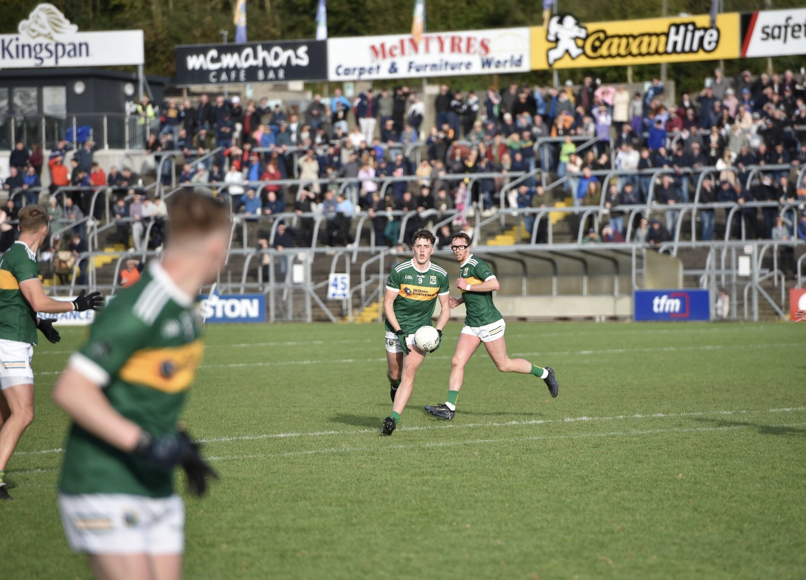
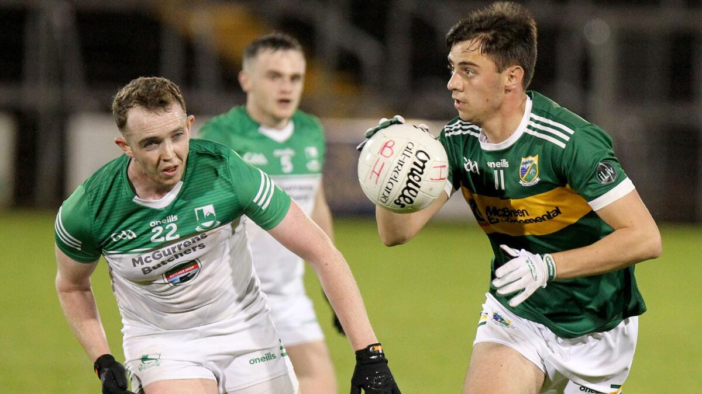
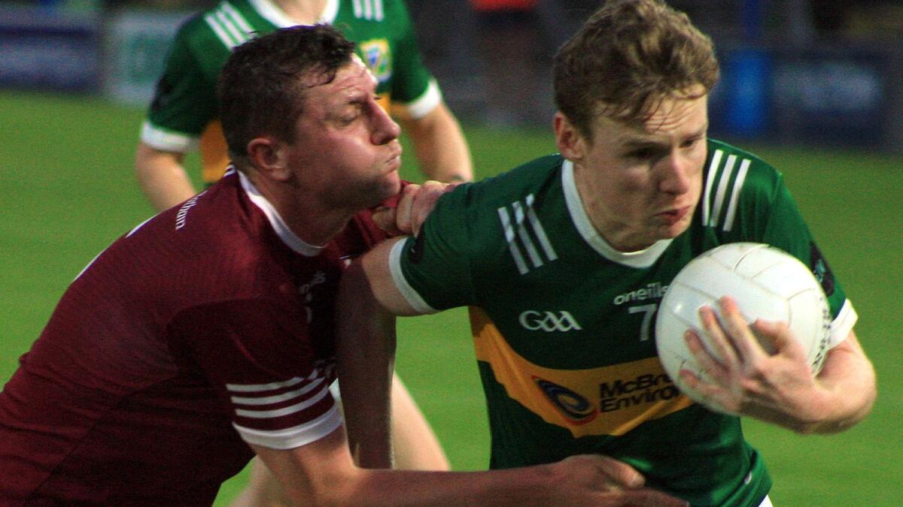
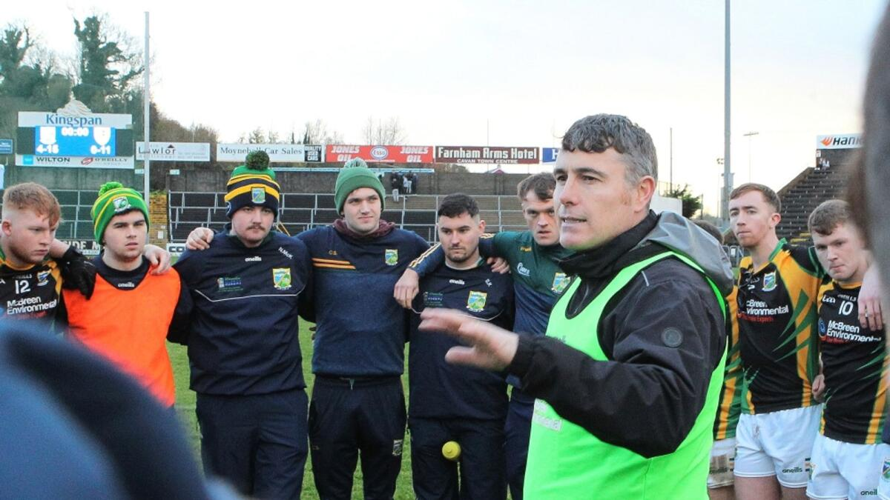
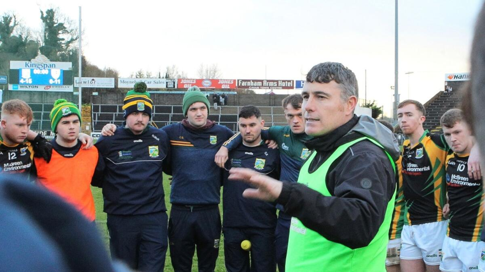

DirectionsStart in Cavan Town: Head west on the R165 (Cavan to Ballyhaise road), which is also known as the Lavey Road. Continue on the R165: Follow this road for about 4-5 km, passing the Cavan Institute and continuing on towards Ballyhaise. Turn Left into Ballyhaise Village: As you approach Ballyhaise, you'll see signs for the village. Turn left into Ballyhaise Village, following signs for the local area. Follow the signs to the GAA Pitch: Once you're in the village, the GAA pitch is well-signposted. It is located just outside the village on the left-hand side, not far from the main road. The total journey should take around 10–15 minutes depending on traffic. If you're using a GPS, the postcode for the area is typically H12 KX83, but it's best to follow local road signs once you're close to Ballyhaise.

 







 
